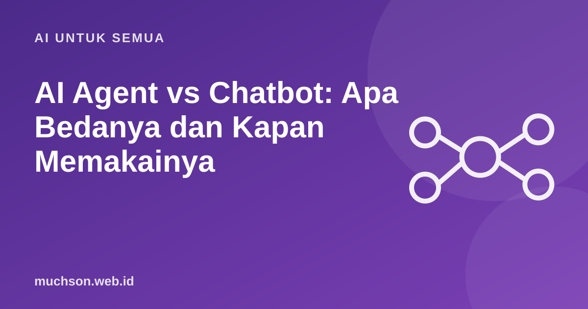

Beranda › Artikel › AI untuk Semua
AI untuk SemuaAI Agent vs Chatbot: Apa Bedanya dan Kapan Memakainya
Istilah AI agent sedang ramai, kadang dipakai untuk apa saja. Perbedaan intinya sederhana: chatbot memberi jawaban, agent menyelesaikan tugas dengan mengambil tindakan. Dan semakin banyak tindakan, semakin penting pengawasan.

Perbedaan dalam satu gambar
Siklus kerja agent
Cocokkan dengan kebutuhan
Aturan aman untuk agent
Prinsip
Banyak masalah bisnis sebenarnya selesai dengan otomasi sederhana. Pilih alat paling sederhana yang menyelesaikan pekerjaan, lalu tambah kecanggihan bila terbukti perlu.
Tanya jawab
Apakah ChatGPT itu agent?
Antarmuka obrolan dasarnya chatbot. Dengan fitur seperti pencarian web, kode, atau integrasi, ia bisa berperilaku mirip agent. Batasnya makin kabur.
Apakah agent bisa dipercaya bekerja sendiri?
Untuk tugas berisiko rendah dan jelas, bisa. Untuk tindakan penting, tetap libatkan manusia.
Apa contoh agent yang sederhana?
Asisten yang membaca email masuk, mengklasifikasikan, mengisi spreadsheet, dan meminta persetujuan Anda sebelum membalas.